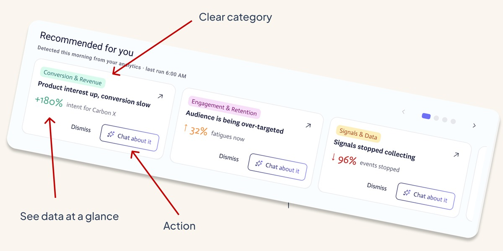

Homepage
revamp
38%
Reduction in time to act on a behavioral signal
22%
Increase in marketers engaging with AI recommendations
41%
Increase in campaign task completion from homepage
6
Separate marketing modules unified into one entry point
Overview
Acoustic is a real-time behavioral marketing platform built for B2C brands. Marketers use this to capture live customer signals: clicks, hesitations, return visits, product interest, enabling marketing teams act on them before the moment passes.
This project explored a new home experience. A single starting point that would help marketers move from "What is happening with my customers?" to "What should I send them right now?"
I designed an AI-powered homepage that brings together behavioral intelligence, audience signals, campaign performance, and a conversational assistant into one unified entry point.
The challenge
Marketers were drowning in signals but starving for action
Marketers are evolving. They need to make data-driven decisions and act on them. How was I going to provide them value without giving them another list report?
Before the redesign, a typical workflow looked like...log in → see a lot of copy they were never going to read → click around to find something interesting → pull a report → interpret the numbers → switch tools (probably multiple times) → build a marketing campaign → cross fingers and wish for the best.
So, out with the old...and in with the new.


The opportunity
Let the platform do the work of finding what matters
Acoustic already had the data. The opportunity was to bring those signals to the surface before the marketer had to search for them.
The design goal became make real-time behavioral intelligence feel as natural as having a conversation with a knowledgeable colleague.

- 01Gives the user a place to find their chat history, but doesn't distract from the target task.
- 02A familiar chat box for when a user wants to just jump in.
- 03Interactive pills give users a way to select from pre-made prompts.
- 04Worked closely with another designer on my team, who designed the insight tiles that assist the chat use case.
Product vision
Design an experience around 3 connected layers
Discover
The homepage proactively surfaces the signals that matter most right now. Rather than presenting marketers with a redundant dashboard, the interface leads with live behavioral opportunities such as:
- Products with rising purchase intent but low conversion
- Audience segments showing fatigue or over-targeting
Here, I worked closely with another designer to create these recommendation cards specifically for my use case. Each recommendation card explains what is happening, why it matters, and offers a direct path to act.

Explore
I needed to provide an experience that allowed a marketer to target information, dive in without losing context, and take action. All from the chat experience.
Acoustic Connect organizes the full picture across: Analytics · Content Studio · Audience · Catalogue · Behavior Studio · Campaigns
The homepage acts as the connective layer giving users a consistent entry point into any of these areas based on what the platform has already identified as worth their attention.

Act
I identified a need to simplify data and quickly act. The kicker was, this is useless if I couldn't bring real value to the user. This product is historically good at bringing the most rich data to the users, where we lacked was making it actionable. That is precisely where I jumped in. Create a familiar AI experience, enrich it with meaningful conversations, and add the ability to action all while never leaving the chat page.
The assistant interprets live behavioral data and guides the marketer toward the relevant insight and next action, no SQL, no report building required.

Key UX principles
Design decisions
Make behavioral intelligence feel like a marketing superpower, not a data science project.
Reduce cognitive load
Users shouldn't need to understand a full data model to get value from it. This homepage does the heavy lifting.
Speak in marketing terms
The interface speaks in terms of revenue, engagement, and campaign outcomes — not data attributes, behavioral scores, or model outputs.
Make AI approachable
The conversational interface gives non-technical marketers a familiar way to access the most sophisticated behavioral capabilities.
Trust
Make AI feel like a knowledgeable colleague, not a black box making mysterious recommendations.
Surface signals proactively
Acoustic already knows which customers are ready to convert. The product should lead with that — not bury it in a module.
Keep context intact
Moving from a live behavioral signal into a campaign conversation should feel like one continuous task, not a series of context switches.
Outcome
The resulting experience shifts the, otherwise siloed, tools into a unified, signal-led workspace.
Instead of...
Signal detected → buried in a tool → marketer never sees it
Designed experience
Signal surfaces → marketer asks → AI explains → action initiated
Project impact
The numbers moved and so did the conversation
The most important lesson from this project was that behavioral marketing UX isn't about showing marketers more data. It's about helping them answer the question, "is this worth my attention?"
The final homepage concept turned a collection of powerful modules into a single, signal-led workspace that helps marketing teams act on live customer intent before the moment passes.